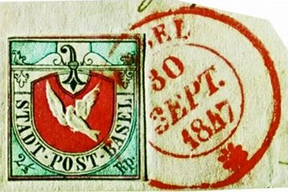
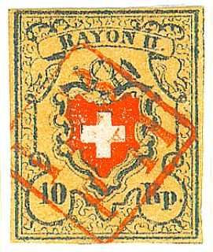

Bâle
Return To Catalogue - Basel forgeries Part 1 - Basel forgeries Part 2 - Geneva - Vaud - Winterthur - Zurich - Switzerland overview
Note: on my website many of the
pictures can not be seen! They are of course present in the
catalogue;
contact me if you want to purchase the catalogue.
2 1/2 Rp black, blue and red
One stamp was enough to post a letter locally, for letters at a longer distance (but still close to Basel), two stamps were needed. This stamp was no longer valid for use after 30 September 1854, 41480 stamps were printed.


Non issued stamp in black, green and red. The second image was
obtained thanks to Robert Furrer. The scanner has turned the
first image too green.
A stamp in black, green and red was prepared, but rejected by the Basel authorities (generally referred to as proof, see picture above).
Value of the stamps |
|||
vc = very common c = common * = not so common ** = uncommon |
*** = very uncommon R = rare RR = very rare RRR = extremely rare |
||
| Value | Unused | Used | Remarks |
| 2 1/2 r black, blue and red | RRR | RRR | |
| 2 1/2 r black, green and red | RRR | - | essay |
Examples:



Franco cancel in black, hardly visible in the second stamp,
exists in red also (see last image)

(Grill cancel)
Also the cancel 'LBPH' in a rectangle (red) exists (this cancel is very rare).

Here this 'LBpH' cancel is seen in red on a Basel stamp and a
'RAYON II' stamp of Switzerland
Many forgeries exists of this Basel stamp, for more information on Basel forgeries Part 1 or Basel forgeries Part 2.
A nice website on Basel stamps can be found on http://www.baslertaube.ch/tauben.htm, with many pictures (over 75 pictures of Basel doves!). Also visit http://www.ghonegger.ch/ (with many beautiful pictures of the rarities of Switzerland).
A really nice website on forgeries of Switzerland (in German) with large pictures can be found at: http://briefmarken.ag/: a treasure full with information (also of the Cantonal issues of Basel).
Fiscal stamps were also issued in Basel, without any inscription, only the arms of Basel in the center, the year on top and the value below. Examples.

More fiscal stamps exist for Basel and a more complete listing can be found at: Switzerland Fiscal Stamps.
{kind=link}